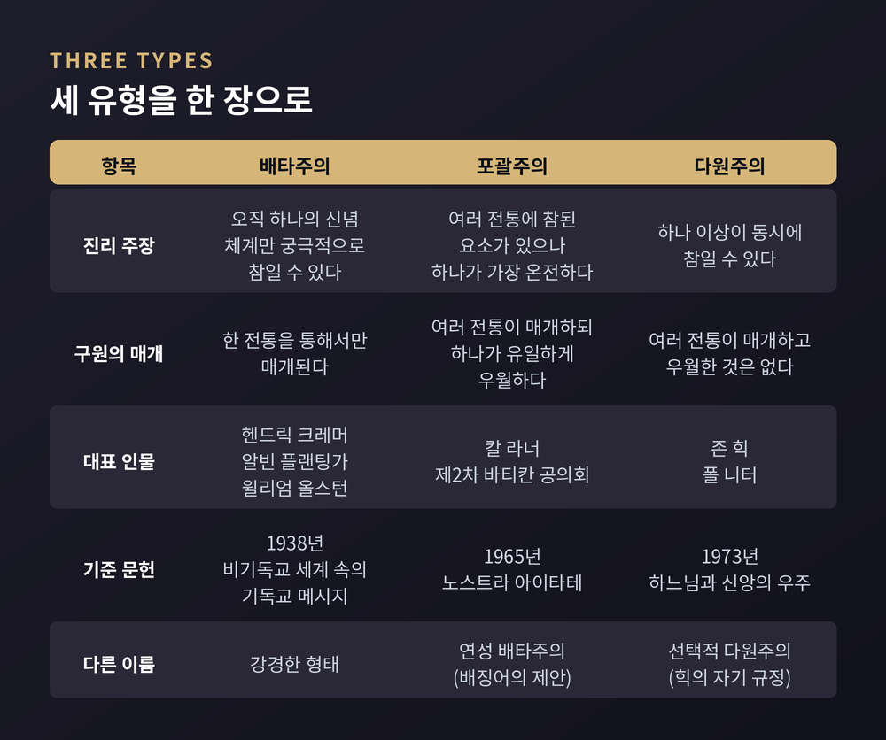
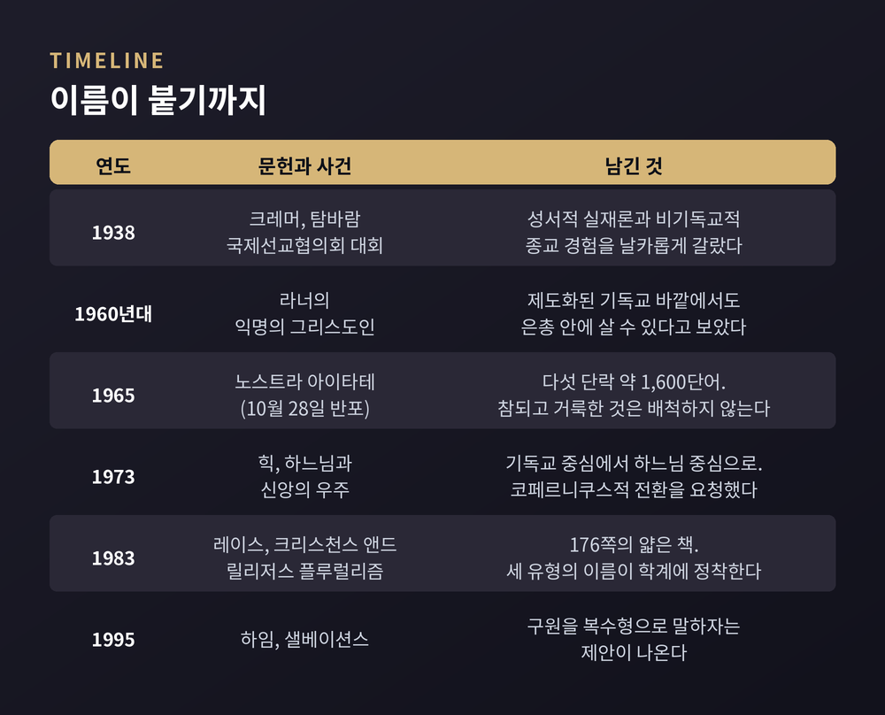
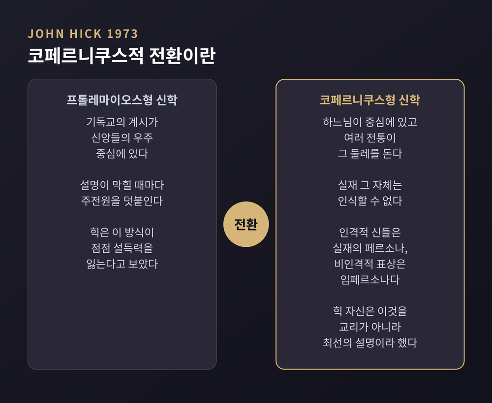

앨런 레이스의 3분법을 종교학의 시선으로 정리했습니다 — 크레머와 플랜팅가의 배타주의 옹호 논증, 칼 라너의 '익명의 그리스도인'과 「Nostra Aetate」의 자리, 존 힉의 코페르니쿠스적 전환과 칸트적 실재 개념, 그리고 이 틀 자체를 향한 드코스타와 하임의 비판까지
이번 글에서는 한 종교가 다른 종교를 설명하는 세 가지 방식을 정리해 보겠습니다. 배타주의, 포괄주의, 다원주의라는 이름으로 묶인 틀입니다. 어느 입장이 옳은지를 가리는 글이 아니라, 각 입장을 지지하는 이들이 어떤 논리를 세워왔는지 따라가 보는 글입니다.
세 줄 요약
시작은 한 권의 책입니다.
앨런 레이스는 1983년 런던 SCM 출판사에서 『Christians and Religious Pluralism: Patterns in the Christian Theology of Religions』를 냈습니다. 176쪽짜리 얇은 책이었습니다.
이 책이 배타주의·포괄주의·다원주의라는 세 이름을 학계에 정착시켰습니다.
인터넷 철학백과사전은 이 3분법을 두고 "종교 다양성에 관한 여러 설명을 묶어온 방식 중 가장 널리 채택된 전략"이라고 적습니다. 레이스 본인은 이 틀을 "생각들을 자리매김하고 서로 관련지을 수 있게 하는 장치"로 내놓았습니다.
정의는 이렇습니다.
배타주의는 오직 하나의 신념 체계나 실천만이 궁극적으로 참일 수 있다고 봅니다. 포괄주의는 여러 전통이 참된 요소를 담을 수 있음을 인정하되, 오직 한 전통만이 궁극적 진리를 가장 완전하게 표현한다고 봅니다. 다원주의는 하나 이상의 신념이 동시에 참일 수 있다고 봅니다.
철학자 로버트 매킴의 표현이 간결합니다. 포괄주의자는 "많은 전통이 잘 해내고 있지만, 한 전통이 나머지보다 더 잘 해낸다"고 본다는 것입니다.
한 가지 단서를 붙여야겠습니다. 신념에 관한 입장과 구원 실천에 관한 입장이 반드시 같은 자리에 서지는 않습니다. 교리에서는 강경해도 구원 문제에서는 넉넉한 경우가 흔합니다.

이름이 붙은 것은 1983년이지만, 논의는 그보다 훨씬 앞서 시작되었습니다.
1938년 헨드릭 크레머가 『The Christian Message in a Non-Christian World』를 냈습니다. 그해 인도 마드라스 인근 탐바람에서 열린 국제선교협의회 대회의 주요 연구 자료가 된 책입니다. 그는 자신이 "성서적 실재론"이라 부른 것과 비기독교적 종교 경험을 날카롭게 갈랐습니다. 자유주의 진영의 반발이 거셌습니다.
1960년대에는 칼 라너의 '익명의 그리스도인' 논의가 나왔습니다. 1965년 10월 28일에는 제2차 바티칸 공의회의 「Nostra Aetate」가 반포되었습니다.
1973년 존 힉이 『God and the Universe of Faiths』에서 "코페르니쿠스적 혁명"을 요청했습니다.
그리고 1983년 레이스의 3분법, 1995년 마크 하임의 『Salvations』가 이어집니다.
예전엔 이 논의가 선교 현장의 실무 문제였습니다. 지금은 인식론과 종교철학의 문제로 옮겨왔습니다.

배타주의는 흔히 완고함으로 오해받습니다. 그러나 철학적으로 다듬어진 형태는 꽤 정교합니다.
알빈 플랜팅가는 1995년 논문 「다원주의: 종교적 배타주의를 위한 변호」에서 이렇게 논합니다.
먼저 그는 배타주의를 좁게 정의합니다. 다른 종교의 존재를 알면서도 자기 신념을 고수하고, 그 종교들 안에 진정한 경건이 있음을 인정하며, 자기 신념을 증명할 결정적 논증이 없음도 인정하는 입장입니다.
"배타주의는 오만하다"는 도덕적 반론에 대한 그의 답이 흥미롭습니다. 그 논증 자체가 오만하거나, 아니면 근거가 없다는 것입니다. 타인에게 신념을 유보하라고 요구하는 일도 결국 하나의 주장이기 때문입니다.
인식론적 반론에 대해서는 이렇게 답합니다. 종교 다양성 자체는 특정 신념의 거짓을 증명하지 못한다는 것입니다. 다만 확신도를 낮출 수는 있다고 그는 인정합니다.
윌리엄 올스턴의 문장도 자주 인용됩니다. "경쟁하는 실천 중 하나가 내 것보다 더 정확하다고 볼 외적 이유가 없다면, 내가 취할 합리적인 길은 내가 숙달한 실천을 고수하는 것이다."
물론 반론이 있습니다. 필립 퀸은 '고수하기'가 합리적 선택지임은 인정하되 유일한 선택지는 아니라고 봅니다. 핵심 신념을 내적으로 수정하는 것도 합리적일 수 있다는 것입니다.
칼 라너의 출발점은 하나의 곤경이었습니다.
그는 그리스도 없이 구원이 없다는 명제를 받아들였습니다. 동시에 예수에 대해 들어본 적조차 없는 사람들이 정죄된다는 결론은 받아들일 수 없었습니다.
그의 해법이 '익명의 그리스도인'입니다. 명시적으로 제도화된 기독교 바깥에서도 하느님의 은총 안에 살며 구원에 이를 수 있다는 것입니다.
그가 제시한 첫 번째 테제는 이렇습니다. 기독교는 절대 종교임을 주장하지만, 그 절대 종교는 사람들에게 역사적 방식으로 다가온다는 것입니다. 즉 그들이 진지하게 그것과 대면할 때 비로소 다가옵니다.
「Nostra Aetate」는 이 구조를 공식 문헌의 언어로 옮겨놓았습니다.
이 선언은 다섯 개 단락, 영어본 기준 약 1,600단어에 불과한 짧은 문서입니다. 그럼에도 제2항의 한 문장이 널리 인용됩니다. "가톨릭 교회는 이 종교들 안에 있는 참되고 거룩한 것은 아무것도 배척하지 않는다."
이어지는 표현이 포괄주의의 구조를 그대로 보여줍니다. 타 종교의 규범과 교리가 "모든 사람을 비추는 저 진리의 한 줄기 빛을 반영하는 일이 드물지 않기 때문"이라는 것입니다.
진리를 인정하되 완전함은 한쪽에 둡니다. 그것이 포괄주의의 자리입니다.
존 힉의 비유는 천문학에서 왔습니다.
프톨레마이오스 체계는 지구를 우주의 중심에 두었습니다. 행성 운동을 설명하려고 주전원을 계속 덧붙였고, 그 수가 늘수록 설득력을 잃었습니다. 결국 태양을 중심에 둔 더 단순한 설명이 그것을 대체했습니다.
힉은 신학에서도 같은 전환이 필요하다고 보았습니다. "기독교가 중심"이라는 자리에서 "하느님이 중심"이라는 자리로 옮겨가자는 것입니다.
그의 이론적 장치는 칸트에게서 빌려온 것입니다.
힉은 궁극적 실재를 '실재(the Real)'라 부릅니다. 실재 그 자체는 인간에게 인식론적으로 접근 불가능합니다. 칸트의 본체와 현상 구분이 여기 그대로 들어옵니다.
우리는 실재를 "종교현상학이 보고하는 신들과 절대자들의 범위로서" 경험할 뿐입니다. 그러므로 인간의 언어로 실재에 붙인 어떤 서술도 문자 그대로 적용되지 않습니다.
야훼, 비슈누, 아미타 같은 인격적 신들을 그는 실재의 '페르소나'라 부릅니다. 라틴어 persona가 연극 가면을 뜻한다는 점을 그는 일부러 끌어옵니다. 브라흐만이나 열반, 도(道) 같은 비인격적 표상은 '임페르소나'입니다.
구원론 축도 있습니다. 힉은 주요 전통들이 그리는 길을 "자기중심성에서 실재중심성으로의 변화"라는 하나의 구조로 읽습니다. 여러 오르는 길이 산꼭대기에서 만난다는 비유입니다.
다만 그 자신도 조심스럽습니다. 자기 가설은 "'최선의 설명'이지 철칙 같은 교리가 아니다"라고 그는 적었습니다.

이 틀이 학계에서 무비판적으로 받아들여진 것은 아닙니다.
가장 날카로운 비판은 개빈 드코스타에게서 나옵니다. 그는 원래 3분법의 지지자였습니다. 그러다 이 유형론을 폐기하고, 모든 유의미한 입장이 사실상 배타주의의 한 형태라고 논했습니다. 어떤 입장이든 타 종교를 이해하는 규범적 틀의 배타적 진리를 유지하기 때문입니다.
그의 논문 제목이 논지를 압축합니다. 「종교에 대한 다원주의적 관점의 불가능성」입니다. 다원주의라 불리는 것은 실제로 존재하지 않으며, 이는 힉의 다원주의에도 바르트의 배타주의에도 똑같이 적용된다는 주장입니다. 그는 알래스데어 매킨타이어, 존 밀뱅크, 케네스 서린의 전통 특수적 접근에 기대어, 다원주의가 계몽주의적 근대성으로 소급되는 세속화 의제를 가린다고 봅니다.
마크 하임은 다른 각도에서 찌릅니다. 1995년 『Salvations: Truth and Difference in Religion』에서 그는 구원을 복수형으로 말하자고 제안합니다. 여러 종교의 목적은 실제로 서로 다르며, 그 목적은 거기 이르는 길에 의해 상당 부분 구성된다는 것입니다.
그의 힉 비판은 이렇습니다. 서로 다른 종교가 같은 '궁극'을 가리킨다고 주장하는 순간, 다원주의는 자기 자신의 다원성 시험을 통과하지 못한다는 것입니다.
논리적 반론도 있습니다. 플랜팅가는 실재가 서로 반대되는 두 속성 중 어느 것도 갖지 않는다는 말이 성립하기 어렵다고 봅니다. 조지 마브로데스는 힉의 입장을 사실상 다신론이라고까지 표현했습니다. 힉은 그런 개념들이 종교적으로 무관하다고 응수했습니다.
대안을 제시하는 흐름도 있습니다. 1980년대 말부터 프랜시스 클루니와 제임스 프레더릭스가 발전시킨 비교신학입니다. 타 종교 일반에 대한 이론을 먼저 세우는 대신, 구체적 텍스트와 전통을 하나씩 깊이 읽자는 제안입니다. 폴 니터는 3분법 대신 대체·성취·상호성·수용이라는 네 모델을 내놓았습니다.
반대 방향의 방어도 있습니다. 페리 슈미트-로이켈은 세 입장을 "구원적 앎의 매개"라는 하나의 축으로 재정의하면 논리적으로 망라적이라고 논증했습니다.
이 논의가 기독교 신학의 언어로 만들어졌다는 점은 짚어둘 필요가 있습니다. 다른 전통에는 다른 어휘가 있습니다.
『리그베다』 1.164.46에 이런 구절이 있습니다. "ekam sat viprā bahudhā vadanti." 존재하는 것은 하나인데, 통찰 있는 이들이 여러 방식으로 말한다는 뜻입니다. 이어지는 대목에서는 하나인 것에 현자들이 아그니, 야마, 마타리슈반이라는 여러 이름을 준다고 말합니다.
불교에는 방편(upāya)이 있습니다. 중생의 영적 역량을 헤아려, 그 사람에게 가장 유익한 만큼의 진리를 드러낸다는 개념입니다. 어떤 가르침이 최고 차원에서 궁극적으로 참이 아니더라도 여전히 유용한 방편일 수 있다는 함의를 담습니다.
이슬람에는 '성서의 백성(ahl al-kitāb)'이라는 범주가 있습니다. 꾸란 이전에 경전을 지녔던 종교의 신도들, 대개 유대인과 기독교인을 가리킵니다. 하디스 문헌은 이들에게 딤미라는 보호 지위를 부여하는 관행의 토대를 놓았습니다.
여기서는 양면을 함께 적어야 공정하겠습니다. 관련 자료는 이들이 2등 시민으로 대우받았다는 점과, 동시에 유럽에서 소수 종교가 자주 겪은 적극적 박해 없이 수 세기 동안 대체로 공존할 수 있었다는 점을 나란히 기술합니다.
세 사례 모두 3분법의 어느 칸에 그대로 들어가지는 않습니다. 전제와 목표가 다르기 때문입니다.
이론과 별개로, 실제 신자들의 생각은 어떨까요.
퓨리서치센터가 2008년 7월 31일부터 8월 10일까지 미국 성인 2,905명을 조사했습니다. "자기 종교만이 아니라 여러 종교가 영생에 이를 수 있다"는 항목에 70%가 동의했습니다.
전통별 편차는 뚜렷했습니다. 힌두교도 89%, 불교도 86%, 주류 개신교 83%, 유대인 82%, 가톨릭 79%가 동의한 반면, 흑인 교회는 59%, 복음주의 교회는 57%, 무슬림은 56%였습니다.
2021년 조사에서는 미국 기독교인의 31%가 "내 종교가 유일한 참 신앙"이라고 답했습니다. 거의 두 배인 58%는 천국으로 이끌 수 있는 종교가 여럿이라고 답했습니다.
해석에는 주의가 필요합니다. 이 수치는 다원주의의 논증을 검증한 것이 아닙니다. 대중의 태도 분포를 보여줄 뿐이고, 조사 문항은 3분법의 학술적 정의와 정확히 대응하지도 않습니다.
그럼에도 한 가지는 분명해 보입니다. 학계에서 다원주의가 여전히 격렬히 논쟁되는 동안, 일반 신자층에서는 다원주의적 답변이 이미 다수라는 점입니다.
끝으로 한 마디만 더 드리겠습니다.
이 세 이름은 정답표가 아닙니다. 서로 다른 대답들이 어디서 갈라지는지를 보여주는 좌표에 가깝습니다. 배타주의는 진리의 단일성을, 포괄주의는 은총의 폭을, 다원주의는 인식의 한계를 각각 앞세웁니다.
한계도 인정해야겠습니다. 이 글은 기독교 신학에서 만들어진 틀을 중심에 놓았습니다. 다른 전통의 자체 논의를 그 어휘 그대로 담기에는 지면이 부족했습니다.
그래도 남는 문장 하나는 이렇습니다. "유형론은 결론이 아니라 질문의 지도입니다."
어느 칸에 서야 하느냐고 물으신다면, 저는 답을 드리지 않겠습니다. 대신 각 입장이 무엇을 지키려 했는지를 먼저 읽어보시길 권합니다.